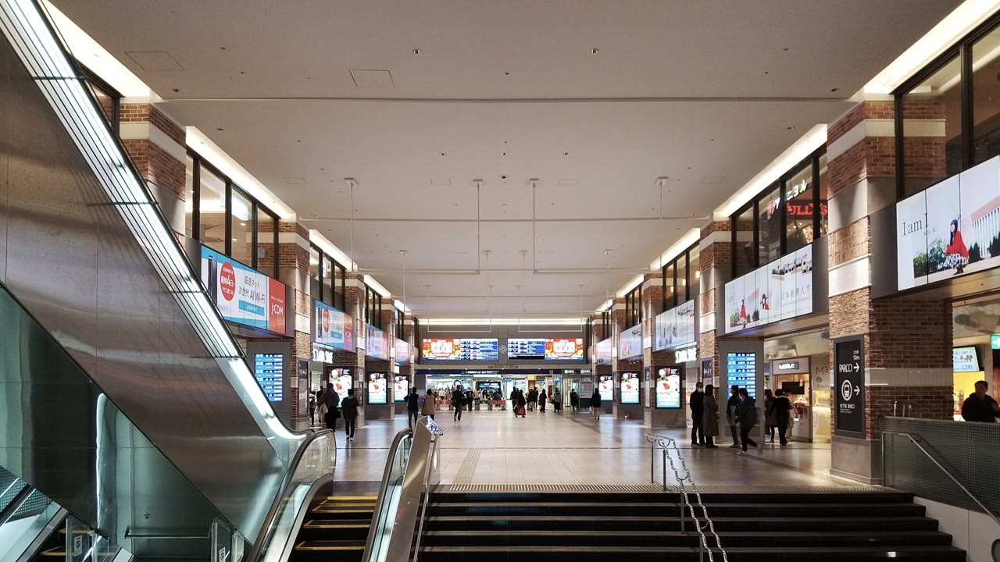
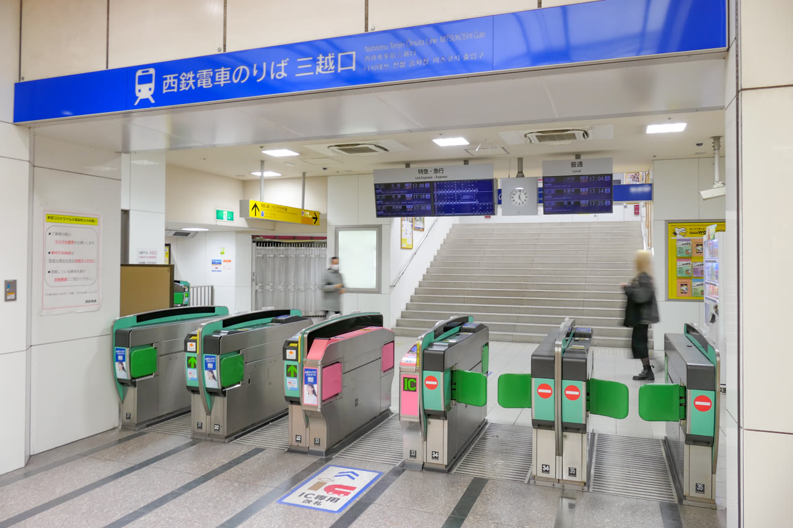

01從飯店怎麼到換票處
住 Dream Inn Hakata → 步行約 10–15 分到博多站筑紫口 → 地下鐵空港線往姪浜方向 → 天神站（約 5 分）。
出地下鐵後跟著「西鉄」「Solaria／ソラリア」指標走，會先到西鐵福岡（天神）站的北口（2F）。這裡離地下鐵最近，也是建議優先換票的地方。
飯店建議 08:30–08:40 出門，對準 09:10 換票、10:00 發車。

住 Dream Inn Hakata → 步行約 10–15 分到博多站筑紫口 → 地下鐵空港線往姪浜方向 → 天神站（約 5 分）。
出地下鐵後跟著「西鉄」「Solaria／ソラリア」指標走，會先到西鐵福岡（天神）站的北口（2F）。這裡離地下鐵最近，也是建議優先換票的地方。
飯店建議 08:30–08:40 出門，對準 09:10 換票、10:00 發車。
KKday 憑證寫的「福岡站事務室、福岡站三越口、福岡站南口」，就是西鐵福岡（天神）站的三個改札旁窗口：

現場看指標找：駅事務室、チケットカウンター、きっぷうりば。有人窗口、掛西鐵標誌即可。
這張是 KKday #21437：Email 電子憑證 → 窗口換成實體票。一般不需要 OTP 簡訊。
藥院站中央改札也可換，但從博多飯店出發，天神北口比較順，換完就能直接上車。
北口換完票後，同一個 2F 改札直接進站，不用再下樓。三越口、南口換的話，也是從該改札旁的人工口進。
係員 窗口或半開式人工口，把票給站員看一下再放行。天神是西鉄天神大牟田線起點，月台在改札內側。電子看板與月台標示找這幾個關鍵字：
特急 大牟田 或 特急 柳川，兩種都是對的Day 2 目標是 10:00 天神發 的特急（週五平日班表；約 10:50 抵西鉄柳川，車程約 50 分）。特急白天大致每 30 分一班（:00／:30 天神發），錯過就搭 10:30，柳川抵達約 11:20，遊船時間會緊一點。
不要誤上普通列車。同站也會開往大善寺、小郡、筑紫等方向的普通／區間車，月台不同、停靠站多、到柳川會慢很多。只認「特急＋大牟田方向」。
車上廣播與車內電子屏會報「次は西鉄柳川」；不確定時問站務或車掌。下車站全名是西鉄柳川——不是西鉄久留米（久留米在前一站，還差一段才到柳川）。
出西鉄柳川改札後，站前或站內找川下り案内所（遊船服務櫃台）。把套票裡的遊船券給工作人員，他們會安排班次並指引前往登船處。
出發前可用 西鉄電車資訊 或乘換案内查「西鉄福岡（天神）→ 西鉄柳川」特急時刻。
飯店 → 博多筑紫口 → 地下鐵天神 → 西鐵北口 2F換票。
帶 KKday 憑證；無需 OTP。換完同一改札走人工口進站。
搭 10:00 特急大牟田行 → 約 10:50 下西鉄柳川 → 案内所換遊船 → 松月乗船場。
也可在三越口、南口換；從地下鐵來優先北口。
{kind=link}